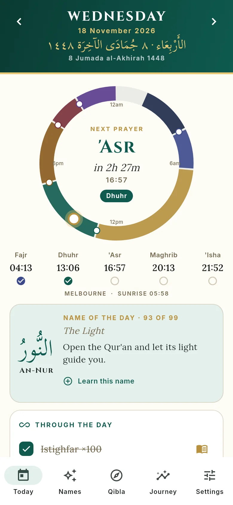
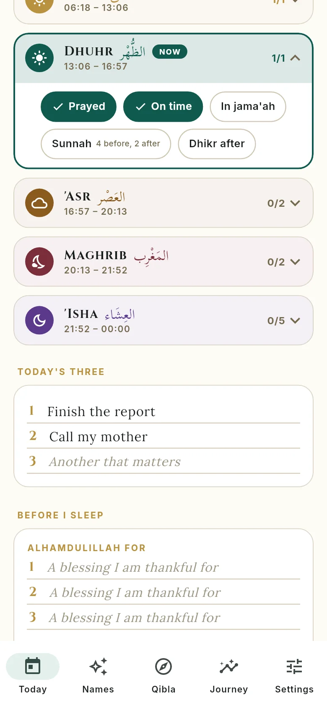
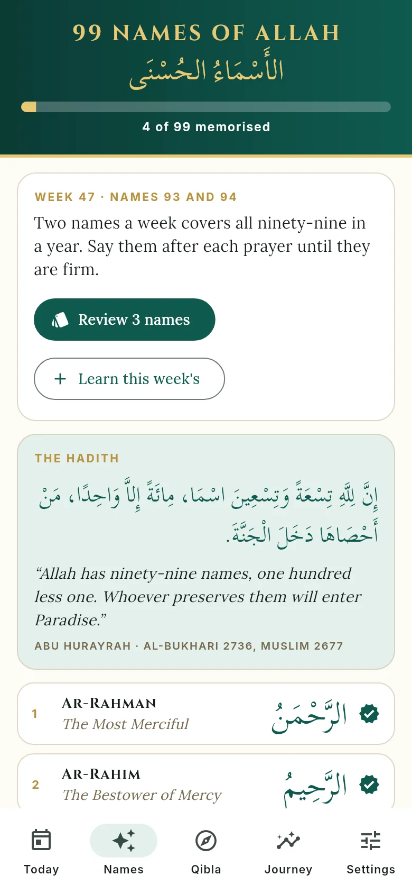
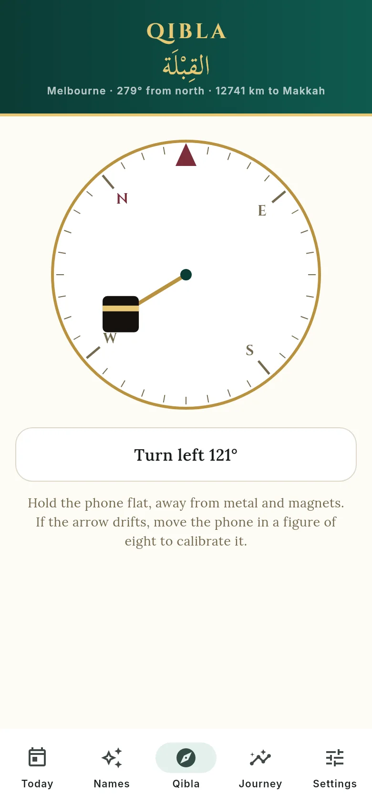
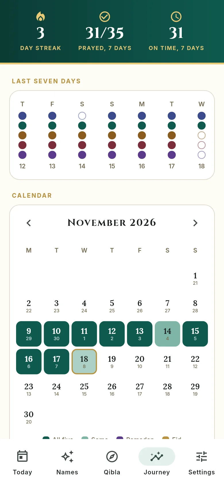
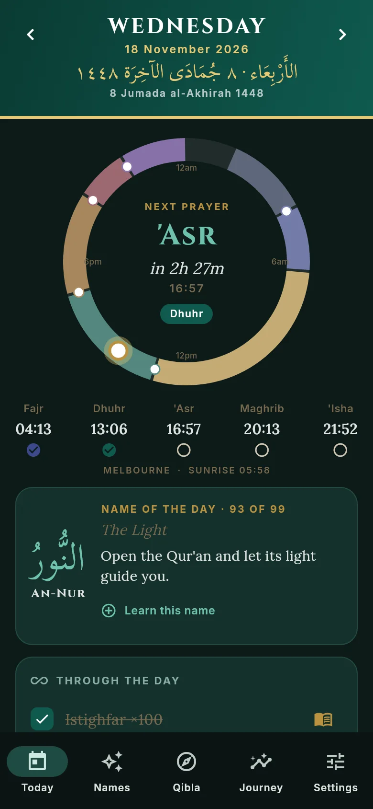

Zaad works out the five prayers for where you are and builds your whole day around them: what to do after Fajr, at Dhuhr, before you sleep, and the hadith behind every act.


Not a list to fill in. The app knows where you are in the day and puts the right things in front of you.
Everything the printed Zaad planner taught, as an app that is with you at the right moment.
Each hadith is in Arabic and English with its narrator and source, taken from the books of hadith.
Flashcards bring back the names you miss sooner, and each day gives one line on how to live by the name.
Turn until the Ka'bah is at the top. It tells you which way to turn and how far.
Fridays, Ramadan (suhoor, fasting, iftar, tarawih, the last ten nights), the two Eids, 'Arafah, 'Ashura and the white days.
A streak, the last seven days, a Hijri calendar coloured by your prayers, a Qur'an juz tracker and a list of your duas.
At each prayer time, ten minutes before, and for morning and evening adhkar. Nothing is sent to a server.
Light and dark. These are real screens from the app, with sample entries.




There is nothing to sign up for and nothing is collected.
Zaad is also a printed planner for 2027, with a hadith in Arabic and English every week and the 99 names to memorise. It is a different thing: a book you write in.
See the printed planner →The app is finished and being tested on phones. It is coming to Google Play and the App Store. Use "Tell me when it is ready" and we will let you know.
Not decided yet. The price, or that it is free, will be on this page when the app is released.
No. The prayer times, the Qibla, the Hijri dates, the hadith and the names are all inside the app. It works on a plane and in the desert.
You choose: Muslim World League, North America (ISNA), Umm al-Qura, Egyptian, Karachi, Dubai, Qatar, Kuwait, Singapore, Türkiye or Moonsighting Committee, with the Shafi'i or Hanafi 'Asr. Check the times against your local mosque.
English, with the Arabic of the hadith and the names of Allah. More languages are planned.
It follows the Umm al-Qura calendar. The start of a month can differ by a day with your local moon sighting, especially for Ramadan and the Eids.
No. It is for learning and reminders. Please verify religious matters with a qualified teacher.
“And take provision, for the best provision is taqwa.” · al-Baqarah 2:197